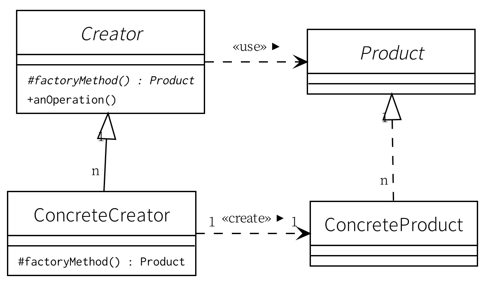

結局 OpenJDK をインストールし直すことにした

どうにも Vuls が微妙なので，当面は手動でアップデート情報を管理しようと思っているのだが，作業の中で OpenJDK のダウンロードページを覗いてみたら既に 12.0.2 が出てるじゃない。
あれ？ “Ubuntu security notices” は何も言ってなかったよなぁ。 と思って浚ってみたら，5月の USN-3975-1 が最後で，しかも LTS 版の OpenJDK 11 の更新情報だった。
つまり OpenJDK 11 よりあとの短期サポート・バージョンはまるっと無視ということらしい。 それなら端から APT に収録すんなよ！ と小一時間説教したい。
というわけで APT による OpenJDK 管理は諦めて，手動で導入・更新することにした。
Java のディストリビューションとバージョン
ここで OpenJDK を含む Java についておさらいしておこう。
現在 Java には大雑把に2種類のディストリビューションがある。 Oracle Java と OpenJDK だ。
Oracle Java は現在，有料版である LTS バージョンを主にサポートしている。 現在の LTS 対象バージョンは Java 11 で2026年9月までサポートする（Oracle が反故にしなければ）。 それ以外の短期サポート・バージョンは OpenJDK が主にサポートしている。 2019年7月時点における OpenJDK 最新版は Java 12 である。
| Oracle Java | OpenJDK | |
|---|---|---|
| Java 9 | 2017年9月 - 2018年3月 | 2017年9月 - 2018年3月 |
| Java 10 | 2018年3月 - 2018年9月 | 2018年3月 - 2018年9月 |
| Java 11 | 2018年9月 - 2026年9月 | 2018年9月 - 2019年3月 |
| Java 12 | - | 2019年3月 - 2019年9月 |
| Java 13 | - | 2019年9月 - 2020年3月 |
| Java 14 | - | 2020年3月 - 2020年9月 |
| Java 15 | - | 2020年9月 - 2021年3月 |
| Java 16 | - | 2021年3月 - 2021年9月 |
| Java 17 | 2021年9月 - 2029年9月 | 2021年9月 - 2022年3月 |
この2つ以外にも OpenJDK の fork とも言えるディストリビューションがいくつか存在する。 これらは主に「失われた Java 8」を長期にサポートするためのディストリビューションである。 大方の派生ディストリビューションは Java 8 のサポートを（とりあえず）2023年までとしているようだ。 それまでに腹を括れ！ ということなんだろうね。 個人的には「Java はやめておけ」なんだけど（年寄りの冷や水）。
Oracle Java と OpenJDK は密接な関係があり，どちらかと言うと Oracle Java のほうが主導的な立場にある。 この関係が何時まで続くかは Oracle の胸三寸というところだろう。
Ubuntu の APT が提供している OpenJDK のバージョンは以下の通り（2019年7月時点）。
$ sudo apt search openjdk-\(\.\)\+-jre$
nvidia-openjdk-8-jre/disco 9.+8u77~10.1.105-0ubuntu1 amd64
NVIDIA provided OpenJDK Java runtime, using Hotspot JIT
openjdk-11-jre/disco-updates,disco-security 11.0.3+7-1ubuntu2~19.04.1 amd64
OpenJDK Java ランタイム - Hotspot JIT 版
openjdk-12-jre/disco,now 12.0.1+12-1 amd64
OpenJDK Java ランタイム - Hotspot JIT 版
openjdk-13-jre/disco 13~13-0ubunt1 amd64
OpenJDK Java ランタイム - Hotspot JIT 版
openjdk-8-jre/disco-updates,disco-security 8u212-b03-0ubuntu1.19.04.2 amd64
OpenJDK Java runtime, using Hotspot JIT
しかし，先ほど述べたように Java 12 は絶賛放置プレイ中のようだし Java 13 はまだ正式リリース前である。
APT 管理下の OpenJDK 12 を削除する
APT 管理下の OpenJDK 12 を削除するには以下のコマンドでよい。
$ sudo apt remove openjdk-12-jre
$ sudo apt autoremove
これで関連パッケージも含めてきれいに削除してくれる。
改めて OpenJDK 12 のインストール
まずは OpenJDK のダウンロードページから最新版のファイルをダウンロードする。
今回は openjdk-12.0.2_linux-x64_bin.tar.gz を落とせばいいだろう。
このファイルを例えば /usr/local/src/ ディレクトリに放り込む。
$ cd /usr/local
$ sudo tar xvf src/openjdk-12.0.2_linux-x64_bin.tar.gz
$ sudo ln -s jdk-12.0.2 java
$ ./java/bin/java -version
openjdk version "12.0.2" 2019-07-16
OpenJDK Runtime Environment (build 12.0.2+10)
OpenJDK 64-Bit Server VM (build 12.0.2+10, mixed mode, sharing)
ふむ。
一応動いているな。
あとは /usr/local/java/bin/ ディレクトリにパスを通せばよい。
たとえば /etc/profile.d/ ディレクトリに java-bin-path.sh とかいった名前でファイルを作って（名前は適当）
# shellcheck shell=sh
# Expand $PATH to include the directory where Java applications go.
java_bin_path="/usr/local/java/bin"
if [ -n "${PATH##*${java_bin_path}}" -a -n "${PATH##*${java_bin_path}:*}" ]; then
export PATH=$PATH:${java_bin_path}
fi
などと記述しておき再ログインすればいいだろう。
みんな大好き Hello World
じゃあ，動作確認。 みんな大好き Hello World。
public class Hello {
public static void main(String[] args) {
System.out.println("Hello, world.");
}
}
これを compile & run。
$ java Hello.java
Hello, world.
よしよし。
最近の Java は，シングル・ファイルなら，わざわざ class ファイルを生成しなくてもコマンド一発で compile & run してくれる。
ついでに PlantUML も試してみるか。

うむうむ。 ちゃんと動くな。